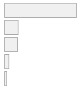
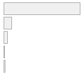

6 Marco metodológico:
El instrumento de medición utilizado para esta investigación es el Estudio Longitudinal Social de Chile (ELSOC) del Centro de Estudios de Conflicto y Cohesión Social de Chile (COES). Para mitigar los efectos de la atrición, el estudio tipo panel emplea dos muestras independientes, una original y otra de refresco. La estrategia de muestreo es probabilística y multietápica, seleccionando los casos por ciudades, bloques, viviendas e individuos, incluyendo en la población del estudio a hombres y mujeres entre 18 a 75 años en zonas urbanas de 40 ciudades del país (Centro de Estudios de Conflicto y Cohesión Social, 2022).
Para esta investigación, se utilizará la última versión de la encuesta, cuyos datos fueron levantados entre julio y noviembre de 2022. Una vez extraídos los casos con al menos un dato perdido (listwise), la muestra efectiva se reduce a 820.
6.0.1 Variables Dependientes
En base a la conceptualización de Basaure (2020) sobre justificación de la violencia y de Gerber et. al. (2018), sobre violencia por el control social y violencia por el cambio social, utilizaremos dos variables dependientes para este estudio. Los indicadores señalados en 6.1, corresponden a las siguientes preguntas: ¿En qué medida cree usted que se justifican o no se justifican las siguientes situaciones? 1. Que Carabineros use la fuerza para reprimir una manifestación pacífica. 2. Que estudiantes tiren piedras a Carabineros. Las categorías de respuestas corresponden a una escala Likert de 1 a 5 respecto a cuando se justifica la represión de una marcha pacífica.
Error : Can’t find dplyr
| Concept | Indicator | Stats / Values | Freqs (% of Valid) | Graph |
|---|---|---|---|---|
| Justificación violencia por el control social | Que Carabineros use la fuerza para reprimir una manifestación pacifica | 1. Nunca 2. Pocas veces 3. Algunas veces 4. Muchas veces 5. Siempre |
558 (68.0%) 107 (13.0%) 100 (12.2%) 35 ( 4.3%) 20 ( 2.4%) |
 |
| Justificación violencia por el cambio social | Que estudiantes tiren piedras a Carabineros en una marcha por la educación del país | 1. Nunca 2. Pocas veces 3. Algunas veces 4. Muchas veces 5. Siempre |
698 (85.1%) 72 ( 8.8%) 34 ( 4.1%) 5 ( 0.6%) 11 ( 1.3%) |
 |
6.0.2 Variables Independientes
Para distinguir la orientación política de los individuos usaremos como indicador la escala de auto ubicación política entre izquierda y derecha, en cuanto esta variable sirve como un resumen abstracto de la ideología política (Haye et. al, 2009). La variable original es una escala del 0 al 12, en donde 0 a 4 corresponde a izquierda, 5 es centro, de 6 a 10 corresponde a derecha, 11 a independiente y 12 a ninguno (apolítico). Para abarcar las distinciones políticas entre izquierda y derecha (Bobbio, 1996), la variable fue recodificada con los valores presentados en la tabla 6.2.
Respecto al miedo a manifestantes y a Carabineros, las variables fueron medidas a través de las preguntas: ¿En qué medida le generan miedo los siguientes actores y situaciones referidos a las protestas iniciadas a mediados de Octubre? 1. Los manifestantes violentos en las protestas. 2. El accionar de las fuerzas de seguridad pública en las manifestaciones. Las categorías de respuesta corresponden a una escala Likert de cinco categorías de respuestas.
| Concept | Indicator | Stats / Values | Freqs (% of Valid) | Graph |
|---|---|---|---|---|
| Orientación política | Orientación política | 1. Izquierda 2. Centro 3. Derecha 4. Apolítico |
157 (19.1%) 263 (32.1%) 130 (15.9%) 270 (32.9%) |
|
| Miedo a manifestantes violentos | Grado de miedo: Los manifestantes violentos en las protestas | 1. Nada 2. Poco 3. Algo 4. Bastante 5. Mucho |
27 ( 3.3%) 42 ( 5.1%) 116 (14.1%) 304 (37.1%) 331 (40.4%) |
|
| Miedo al accionar de Carabineros en manifestaciones | Grado de miedo: El accionar de las fuerzas de seguridad en las manifestaciones | 1. Nada 2. Poco 3. Algo 4. Bastante 5. Mucho |
101 (12.3%) 91 (11.1%) 198 (24.1%) 252 (30.7%) 178 (21.7%) |
6.0.3 Variables de Control
De acuerdo a estudios anteriores, factores socio-demográficos como edad, sexo y nivel socioeconómico influyen en la justificación de la violencia (Arthur & Case, 1994). La violencia suele ser más aceptada por hombres por sobre mujeres, adultos por sobre jóvenes y personas con bajo nivel educativo por sobre individuos con alto nivel educativo. El nivel educacional de los entrevistados fue recodificado de 9 a 5 categorías de respuesta, siguiendo la codificación CINE 2011 (UNESCO, 2013). Así también, personas que pertenecientes a grupos indígenas (Gerber, González, Jiménez-Moya, Moya, & Jackson, 2018) suelen justificar menos la violencia por el control social. La tabla 6.3 muestra los valores y frecuencias para las variables de control mencionadas.
| Concept | Indicator | Stats / Values | Freqs (% of Valid) | Graph |
|---|---|---|---|---|
| Sexo | sexo | 1. Hombre 2. Mujer |
302 (36.8%) 518 (63.2%) |
 |
| Edad | Edad | Mean (sd) : 49.4 (15.5) min < med < max: 21 < 50 < 83 IQR (CV) : 26 (0.3) |
62 distinct values |  |
| Pertenencia a grupo indígena | Pertenencia a grupo indígena | 1. No pertenece 2. Pertenece a grupo indigen |
746 (91.0%) 74 ( 9.0%) |
 |
| Nivel educativo | Nivel educativo | 1. Primaria incompleta 2. Primaria y secundaria baj 3. Secundaria alta 4. Terciaria ciclo corto 5. Terciaria y postgrado |
98 (12.0%) 82 (10.0%) 354 (43.2%) 130 (15.9%) 156 (19.0%) |
 |
6.0.4 Análisis
En concordancia con los objetivos de esta investigación y las hipótesis planteadas, se utilizarán dos tipos de análisis. En primer lugar, usaremos estadísticos univariados para explorar las variables seleccionadas. En segundo lugar, utilizaremos análisis descriptivos bivariados y correlaciones para observar las relaciones entre las variables. Finalmente, debido al carácter categórico de las variables dependientes, propondremos una serie de modelos de regresión logística ordinal con efectos de interacción, que permitirá interpretar el efecto de las variables independientes en la dependiente observando la interacción entre las primeras.